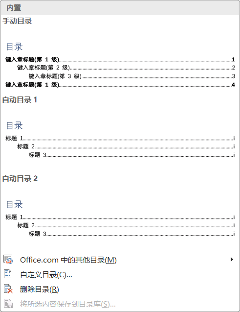
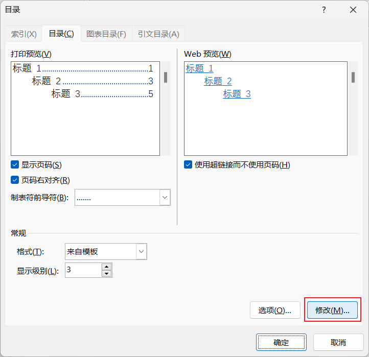
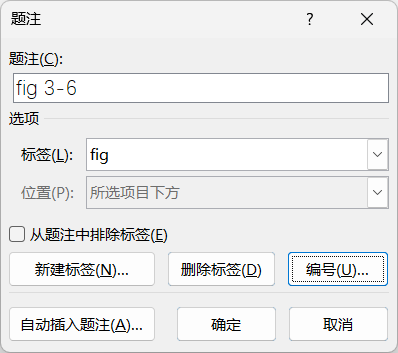
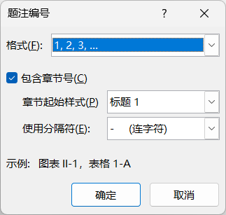
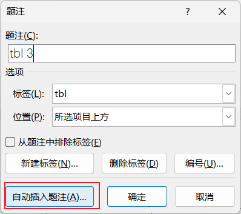
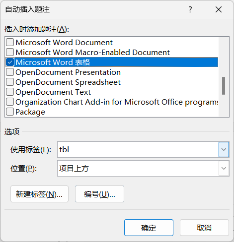
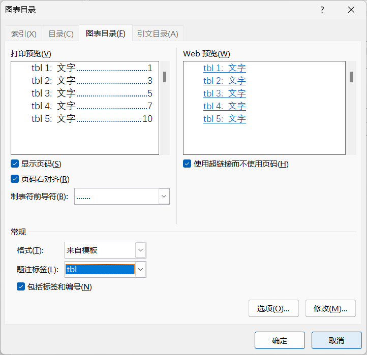
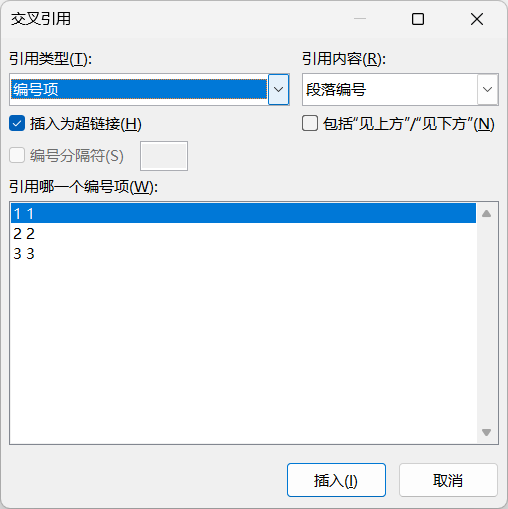

引用
References
- 内容 Contents
-
目录题注交叉引用
- 方法 Methods
- 示范 + 实操
目录
- . 需要标题样式|大纲级别支持，这是创建目录的前提
- . 可以插入系统内置的目录，也可以自定义目录
- . 文档内容变化后，需要"更新域"以保持目录页的页码引用和正文保持一致性
- . 在自定义目录中，可以"修改"目录，操作同"样式"的修改
- . TOC - Table Of Contents
- . 还可以为文档中的图、表生成目录，请查看后续的"题注" → "插入表目录"一节
-
 目录  自定义目录
题注
- . 为图片、图表、表格、公式等添加编号以便被引用
- . 可以"包含章节号"；如果章节是中文，可以从节开始，如图1.1，否则会出现图一.1这种奇怪的编号
- . "包含章节号"需要多级列表支持
- . 题注插入后，系统会生成一个默认的"题注"样式；先设置好格式再更新到默认样式
- . "题注"格式一般为：中文宋体；西文Times New Rome；5号；单倍行距；居中
- . "自动插入题注"，对表格比较友好；图片需要特别处理才可以
- . 建议将"题注"添加到快速启动栏，分别使用
-
 题注  包含章节号的题注  包含章节号的题注  包含章节号的题注 - 表目录
- . 为文档的图、表等生成目录
-
 插入表目录 - 交叉引用
- . 引用文档中的特定位置，如标题、图表、表格等，常见于正文中对参考文献的引用，引用的标记多为编号
- . 当引用内容发生变化时，通过"更新域"可以动态刷新；通常是全选再更新
-
 交叉引用